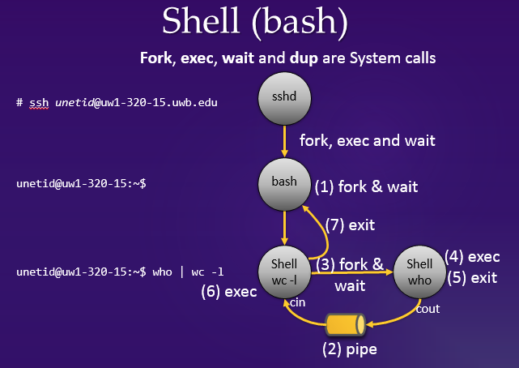
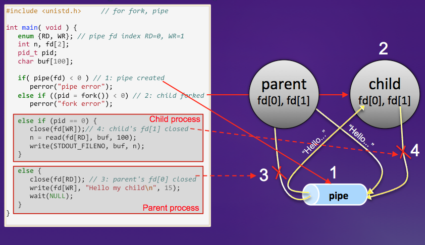

0. Attention
This series of programming assignments is a step-by-step implementation of OS simulator in Java. Since all the assignments were comprehensively designed and linked to each other, it is quite difficult to drastically change their questions every quarter. Thus, if you were to contact with the former CSS430 students, you might get the answers, which is nevertheless considered as plagiarism.
Please note that you must independently work on all programming assignments except the final project. The instructor keeps the code of all the former students in his database, compares your code with the database contents, and will never tolerate any academic dishonesty. In fact, some students have been sent to the vice chancellor's office when their plagiarism were found.
1. Purpose
This assignment intends (1) to familiarize you with Linux programming using several system calls such as fork, execlp, wait, pipe, dup2, and close, and (2) to help you understand that, from the kernel's view point, the shell is simply viewed as an application program that uses system calls to spawn and to terminate other user programs. You will also become familiar with the ThreadOS operating system simulator in part 2 of this assignment.
2. Shell
This section explains the behavior and the language syntax of the Unix shell.
Command interpretation
The shell is a command interpreter that provides Unix users with an interface to the underlying operating system. It interprets user commands and executes them as independent processes. The shell also allows users to code an interpretive script using simple programming constructs such as if, while and for, etc. With shell scripting, users can create customized automation shell tasks.
The behavior of shell simply repeats:
- Displaying a prompt to indicate that it is ready to accept a next command from its user,
- Reading a line of keyboard input as a command, and
- Spawning and having a new process execute the user command.
The prompt symbols frequently used include for example:
hostname$uw1-320-lab:~$How does the shell execute a user command? The mechanism follows the steps given below:
- The shell locates an executable file whose name is specified in the first string given from a keyboard input.
- It creates a child process by duplicating itself.
- The duplicated shell overloads its process image with the executable file.
- The overloaded process receives all the remaining strings given from a keyboard input, and starts a command execution.
For instance, assume that your current working directory includes the a.out executable file and you have typed the following line input from your keyboard.
uw1-320-lab:~$ ./a.out a b cThe shell has some built-in commands that changes its current status rather than executing a user program. (Note that user programs are distinguished as external commands from the shell built-in commands.) For instance,
uw1-320-lab:~$ cd public_htmlThe shell can receive two or more commands at a time from a keyboard input. The symbols ';' and '&' are used as a delimiter specifying the end of each single command. If a command is delimited by ';', the shell spawns a new process to execute this command, waits for the process to be terminated, and thereafter continues to interpret the next command. If a command is delimited by '&', the shell execution continues by interpreting the next command without waiting for the completion of the current command.
uw1-320-lab:~$ who & ls & date- Displaying a prompt to show that it is ready to accept a new line input from the keyboard,
- Reading a keyboard input,
- Repeating the following interpretation till reaching the end of input line:
- Changing its current working status if a command is built-in, otherwise
- Spawning a new process and having it execute this external command.
- Waiting for the process to be terminated if the command is delimited by ';'.
I/O redirection and pipeline
One of the shell's interesting features is I/O redirection.
uw1-320-00% a.out < file1 > file2uw1-320-lab:~$ command1 | command2 | command3uw1-320-lab:~$ who | wc -lShell implementation techniques
Whenever the shell executes a new command, it spawns a child shell and lets the child execute the command. This behavior is implemented with the fork and execlp system calls. If the shell receives ";" as a command delimiter or receives no delimiter, it must wait for the termination of the spawned child, which is implemented with the wait system call. If it receives "&" as a command delimiter, it does not have to wait for the child to be terminated. If the shell receives a sequence of commands, each concatenated with "|", it must recursively create children whose number is the same as that of commands. Which child executes which command is a kind of tricky. The farthest offspring will execute the first command, the grand child will execute the 2nd last, and the child will execute the last command. Their standard input and output must be redirected accordingly using the pipe and dup2 system calls. The following diagrams describe how to execute "who | wc -l", and how to use the pipe system call.
|  |
|  |
3. ThreadOS
ThreadOS is an operating system simulator that has been designed in Java for our CSS430 course. You need a working knowledge of ThreadOS in order to work on the assignment in part 2. The basic features will be explained in the 2nd week's lecture. If you have understood the features discussed in the lecture, you may skip to Section 4, Statement of Work.
Through this series of assignments, you are to implement and/or to enhance some portions of ThreadOS. ThreadOS loads Java programs that have been derived from the Thread class, manages them as user processes, and provides them with some basic operating system services. Those services include thread spawn, thread termination, disk operations, and even standard input/output. ThreadOS receives all service requests as a form of simulated interrupt from each user thread, handles them, and returns a status value to the interrupting thread.
Structure
ThreadOS consists of several components:
| Component | Java/Class | Description |
| Boot | Boot.java | invokes a BOOT system call to have Kernel initialize its internal data, power on Disk, start the Scheduler thread, and finally spawn the Loader thread. |
| Kernel | Kernel.java | receives an interrupt, services it if possible, otherwise forwards its request to Scheduler or Disk, and returns a completion status. |
| Disk | Disk.java | simulates a slow disk device composed of 1000 blocks, each containing 512 bytes. Those blocks are divided into 10 tracks, each of which thus includes 100 blocks. The disk has three commands: read, write, and sync detailed in the assignment 3, 4, and 5. |
| Scheduler | Scheduler.java, TCB.java | receives a Thread object that Kernel instantiated upon receiving an EXEC system call, allocates a new TCB(Thread Control Block) to this thread, enqueues the TCB into its ready queue, and schedules its execution in a round robin fashion. |
| SysLib | SysLib.java | is a utility that provides user threads with a convenient style of system calls and converts them into corresponding interrupts passed to Kernel. |
 |
To start ThreadOS, simply type:
uw1-320-lab:~$ java Boot
ThreadOS ver 1.0:
Type ? for help
threadOS: a new thread (thread=Thread[Thread-3,2,main] tid=0 pid=-1)
-->| ? | prints out its usage. |
| l user_program | starts user_program as an independent user thread and waits for its termination. |
| q | synchronizes disk data and terminates ThreadOS |
Note that Loader is not a shell. It simply launches and waits for the completion of a user program (which may behave as a shell). From ThreadOS' point of view, there is no distinction between Loader and the other user programs.
User Programs
A user program must be a Java thread. Java threads are execution entities concurrently running in a Java application. They maintain their own stacks and program counter but share static variables in their application. At least one thread, (i.e., the main thread) is automatically instantiated when an application starts a main function. Threads other than the main thread can be dynamically created in the similar way to instantiate a new class object using new. Once their start method is called, they keep executing their own run method independently from the calling function such as main. Java threads can be defined as a subclass of the Thread class.
The following Java thread prints out a word given in args[0] repeatedly every loop number of dummy iterations. The loop is given in args[1].
| 1 2 3 4 5 6 7 8 9 10 11 12 13 14 |
|
If you write the following main function:
| 1 2 3 4 5 6 7 8 9 10 11 |
|
it will instantiate two PingPong threads, one printing out "ping" every 10000 dummy iterations and the other printing out "PING" every 90000 dummy iterations.
ThreadOS Loader actually takes care of this thread-instantiating part of main function. Once you invoke ThreadOS, Loader waits for a l command, say "l PingPong ping 10000". Then, it will load your PingPong class into the memory, instantiate its object, pass a String array including ping and 10000 as arguments to this thread, and wait for its termination. Note that in general Java threads can receive any type of and any number of arguments, however ThreadOS restricts its user programs to receive only a String array as their argument.
Java itself provides various classes and methods that invoke real OS system calls such as System.out.println and sleep. Since ThreadOS is an operating systems simulator, user programs running on ThreadOS are prohibited from using real OS system calls. Prohibited classes include but are not limited to:
Instead, user programs are provided with ThreadOS-unique system calls including standard I/O, disk access, and thread control. Therefore, System.out.print( word + " " ); should be replaced with one of ThreadOS-unique systems calls:
SysLib.cout( word + " " );
While Java threads can be terminated upon a simple return from their run method, ThreadOS needs an explicit system call to terminate the current user thread.
SysLib.exit( );| 1 2 3 4 5 6 7 8 9 10 11 12 13 14 15 16 |
|
System Calls
ThreadOS Kernel receives requests from each user thread as interrupts to it. Such an interrupt is performed by calling:
Kernel.interrupt( int interruptRequestVector,
int trapNumber,
int parameter,
Object args );where interruptRequestVector may be
- 1: INTERRUPT_SOFTWARE,
- 2: INTERRUPT_DISK, and
- 3: INTERRUPT_IO
trapNumber specifies a request type of software interrupt such as
- 0: BOOT
- 1: EXEC
- 2: WAIT
- 3: KILL, etc.
parameter is a device-specific value to control each device; and
args are arguments of each interrupt request.
Since this interrupt method is not an elegant form to a user program, ThreadOS provides a user program with its system library, called SysLib that includes several important system-call functions as shown below. (Unless otherwise mentioned, each of these functions returns 0 on success or -1 on error.)
- SysLib.exec( String args[] ) loads the class specified in args[0], instantiates its object, simply passes the following elements of String array, (i.e., args[1], args[2], ...), and starts it as a child thread. It returns a child thread ID on success, otherwise -1.
- SysLib.join( ) waits for the termination of one of child threads. It returns the ID of the child thread that has woken up the calling thread. If it fails, it returns -1.
- SysLib.exit( ) terminates the calling thread and wakes up its parent thread if this parent is waiting on join( ).
- SysLib.cin( StringBuffer s ) reads keyboard input to the StringBuffer s.
- SysLib.cout( String s ) prints out the String s to the standard output. Like C's printf, it recognizes '\n' as a new-line character.
- SysLib.cerr( String s ) prints out the String s to the standard error. Like C's printf, it recognizes '\n' as a new-line character.
- SysLib.rawread( int blkNumber, byte[] b ) reads one block data to the byte array b from the block specified by blkNumber.
- SysLib.rawwrite( int blkNumber, byte[] b ) writes one block data from the byte array b to the block specified by blkNumber.
- SysLib.sync( ) writes back all on-memory data into a disk.
In addition to those system calls, the system library includes several utility functions. One of them is:
- public static String[] SysLib.stringToArgs( String s ) converts a space-delimited string into a String array in that each space-delimited word is stored into a different array element. This call returns such a String array.
Other components
These components include Scheduler and Disk. They will be explained in details as you will need to hack them in the assignments 2 - 5. What you need to know for the assignment 1 is only how to get started and finished with ThreadOS, all of which have been introduced above.
4. Statement of Work
Part 1: Linux System Programming
Code a C++ program, named processes.cpp that receives one argument, (i.e., argv[1]) upon its invocation and searches how many processes whose name is given in argv[1] are running on the system where your program has been invoked. To be specific, your program should demonstrate the same behavior as:
$ ps -A | grep argv[1] | wc -lImplement processes using the following system calls:
- pid_t fork( void ); creates a child process that differs from the parent process only in terms of their process IDs.
- int execlp( const char *file, const char *arg, ..., (char *)0 ); replaces the current process image with a new process image that will be loaded from file. The first argument arg must be the same as file.
- int pipe( int filedes[2] ); creates a pair of file descriptors (which point to a pipe structure), and places them in the array pointed to by filedes. filedes[0] is for reading data from the pipe, filedes[1] is for writing data to the pipe.
- int dup2( int oldfd, int newfd ); creates in newfd a copy of the file descriptor oldfd.
- pid_t wait( int *status ); waits for process termination
- int close( int fd ); closes a file descriptor.
For more details, type the man command from the shell prompt line. Use only the system calls listed above. Do not use the system system call. Imitate how the shell performs "ps -A | grep argv[1] | wc -l". In other words, your parent process spawns a child that spawns a grand-child that spawns a great-grand-child. Each process should execute a different command as follows:
| Process | Command | Stdin | Stdout |
| Parent | wait for a child | no change | no change |
| Child | wc -l | redirected from a grand-child's stdout | no change |
| Grand-child | grep argv[1] | redirected from a great-grand-child's stdout | redirected to a child's stdin |
| Great-grand-child | ps -A | no change | redirected to a grand-child's stdin |
Part 2: ThreadOS Shell Design
Code Shell.java, a Java thread that will be invoked from ThreadOS Loader and behave as a shell command interpreter.
uw1-320-lab:~$ java Boot
ThreadOS ver 1.0:
Type ? for help
-->l Shell
l Shell
threadOS: a new thread (thread=Thread[Thread-6,2,main] tid=1 pid=0)
shell[1]% TestProg1 & TestProg2 &
... A concurrent execution of TestProg1 and TestProg2
...
shell[2]% TestProg1 ; TestProg2
... A sequential execution of TestProg1 and TestProg2
...
shell[3]% exit
-->q
uw1-320-lab:~$Once your Shell.java is invoked, it should print out a command prompt:
shell[1]%You do not need to implement standard I/O redirection or pipes. You do not need to provide shell variables and programming constructs, either. Only the required functionality of your Shell.java is handling an arbitrary number of commands in a line. You may assume that commands, arguments, and even delimiters are separated by arbitrary amounts of spaces or tabs.
To test your Shell.java, use PingPong.java that is found in the same directory as ThreadOS. Your test should be
Shell[2]% PingPong abc 10000000 & PingPong xyz 10000000 & PingPong 123 10000000 &
Shell[1]% PingPong abc 10000000 ; PingPong xyz 10000000 ; PingPong 123 10000000 ;
The complete ThreadOS source code can be found in
- UW1-320 Linux machines: /usr/apps/CSS430/ThreadOS/
Copy all compiled class files into your directory and thereafter compile your shell.java. Do not try to compile the ThreadOS source code, some portion of which cannot be accessed. (Those are your future assignments.)
Hints: In order to read a command line, you should use SysLib.cin( StringBuffer s ) that returns a line of keyboard input to the StringBuffer s. Parsing and splitting the line into words can be performed with the StringTokenizer class found in java.util. For the same purpose, you can also use the SysLib.stringToArgs( String s ) utility function which is much easier to use.
5. What to Turn In
- Part 1 must include:
Your processes.cpp source code An output when running: processes tty ps -A | grep ttys | wc -l processes Sys ps -A | grep Sys | wc -l processes user ps -A | grep user | wc -l - Part 2 must include:
Shell.java An output when testing your Shell.java with PingPong.java - Report:
Document how to test your Shell.java. Explain the algorithm of your processes.cpp and Shell.java in some statements, using some flowcharts, or whatever. - Softcopy:
processes.cpp and Shell.java
gradeguide1.txt is the grade guide for the assignment 1.
6. Note
Visit CSS430 Operating Systems Assignments Home Page in order to reassure your working environment and turn-in procedure.
7. FAQ
This website could answer your questions. Please click here before emailing the professor :-).